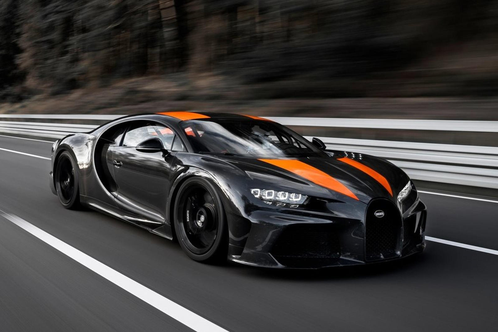

Abstract
There is so much that goes into the development of automobiles, and the Bugatti Chiron is no
exception. Founder Ettore Bugatti’s main goal was to put his automobiles on the map,
to express his automobiles engineering magnificence to the entire world.
Bugatti being founded in the French City of Molsheim, Alsace in 1909 and winning its first
Le Mans 24 hour race in just 28 years and remaining the reigning champion for the next 10 years
boasted Bugatti’s mechanical and engineering excellence to the world. However, after the death of
Ettore Bugatti in 1947 and his son Jean Bugatti who died testing a Bugatti Type 57 race car 6 years prior,
there would be no true successor. The once renown automotive marvel would spiral
uncontrollably through more series of unfortunate events, until Bugatti was bought by the Volkswagen Group
in 1998 leading to a revival of a legacy. The VW group’s main goal was to revive the legacy of Bugatti.
They planned to supply an unprecedented amount of power to their first automobile in the Bugatti-VW era,
the Bugatti Veyron, an amount of power that was thought be impossible in a production car, 1001 metric
horsepower with the birth of a quad turbocharged W-16 engine. Having obliterated the previous speed
record 241 mph by over 25 mph, having written their name in the history books forever, they were not finished
just yet. Coming out with this statement “The challenge to break the 300mph barrier has long been an ambition of the
automotive world. A speed few can comprehend…” Bugatti (2019) Bugatti Chiron breaks through magic 300mph barrier.
Article
How Bugatti engineers broke through the "impossible" 300 mph speed barrier

The origins
Bugatti was originally founded in 1909 in the French city of Molsheim, Alsace, formerly a German city, by Ettore Bugatti.
The company first established their presence, passion and achievements by winning the 1937 and later on 1939, 24 hours of
Le Mans race with head driver Jeane-Pierre Wimille. Bugatti would remain the reigning champion for the next ten years,
thus boasting mechanical and engineering magnificence to the world. However, the success that Bugatti is known for today
would not come without its downfalls. After the death of Ettore Bugatti in 1947 and his son Jean Bugatti who died testing
a Bugatti Type 57 race car 6 years prior, there would be no true successor. The once renown automotive marvel would spiral
uncontrollably through more series of unfortunate events, until Bugatti was bought by the Volkswagen Group in 1998 leading
to a revival of a legacy.
The revival of a legacy
The VW group had set to revolutionise the term sports car, their eyes were set on obliterating the fastest production car record,
thus leading to the reveal of the Bugatti Veyron Super Sport with a W-16 engine power plant reaching speeds of 267.8mph and
inventing the new term hyper sports car. This resulted in the destruction of the previous 241 mph Koenigsegg CCR record.
However, their goal had not been achieved just yet. Their ambition had been revealed with this statement,
“The challenge to break the 300mph barrier has long been an ambition of the automotive world. A speed few can comprehend…”.
Bugatti was heading towards uncharted territory.
The Veyron’s successor and how modern technology affect on engine effifciency
The new project for the Veyron’s successor had begun, and it started with the engine. The iconic W-16 engine that was first
planted into the Bugatti Veyron in 2005, was initially hinted by Ettore Bugatti himself almost 100 years ago. Never before
had a production vehicle featured an engine so compact with such sheer menacing power ripping through 0-60 mph in just 2.5 seconds
and having a top speed of 267 mph. What was thought to be an unachievable amount of power was surpassed by the Veyron’s successor
(the Bugatti Chiron) by about 50% with the exact same canvas, the same engine that was planted into the Veyron was also planted into
the Chiron, “but achieving new levels of performance meant looking at every single component afresh”. “Larger turbochargers” and a
“duplex fuel injection system with 32 injection valves were fitted”. To truly achieve the extraordinary power required to theoretically
break the laws of physics and reach the impossible 300 mph barrier, the engine needed to be manipulated using modern technology such as
an ECU. A “programmable ECU” is a computer chip “that can be programmed”, unlike a normal ECU to increase efficiency and to ensure the
car is riding smoothly. The job of the ECU is to read sensor inputs such as engine load, intake air temperature, RPM and then use
these readings to calculate the amount of fuel needed and act as a “fuel injection controller for the spark ignition for the internal
combustion engine”, to enable the engine to be working at an optimum rate. Just like when a PC is overclocked to increase performance
and efficiency it will increase in temperature, this also results in the engine increasing in temperature and likely could cause it to
overheat, interception of the engine overheating was a necessity. So, Bugatti engineers fitted the Bugatti with a “high temperature cooling
loop” consisting of “one main and two auxiliary radiators” and a water cooling system circulating 800litres of water through the engine
every minute, ensuring that the car wouldn’t overheat in the speeds they were trying to achieve.
How aerodynamics played a major role in breaking the 300 mph barrier
It is no surprise that aerodynamics affect the performance of cars significantly, and Bugatti definitely took aerodynamics into consideration
when constructing the Chiron. Looking at the two models side by side, we clearly notice a difference in generation. The visible aerodynamic
changes are – a “250mm” body extension at the rear, this helped to control both downforce and lift at the rear of the car which is important
as a car travelling at 300mph has to be firmly placed on the track, “removal of the wing, a lower ride height, a modified front splitter” and
a “modified rear diffuser”, these modifications were intentionally made to minimise drag and still provide enough downforce to allow the car
to be planted on the track firmly. With “60,000 liters of oxygen being sent through the engine per minute (referenced from Bugatti)”, it is safe
to say that Bugatti had aimed to perfect the aero of the Chiron just like they did with the engine.
More than 100 years of elegance, passion, brilliant technical achievements and perfection. That is Bugatti.
///////////////////////////////////////////////////////